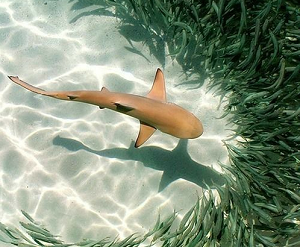
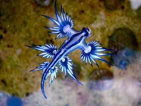
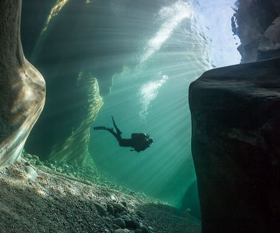

Aqua Planet conducts research on breeding, health management, and disease treatment for marine animals at the aquarium.

(1) This research includes nutrition, disease prevention, disease treatment technologies to aid marine aquarium animals, including salt water fish, crustaceans, and mollusks stay healthy within the aquarium.
(2) Aqua Planet contributes to the preservation of many species in the marine ecosystem by providing fundamental information to enhance breeding technology
and improve knowledge on animal breeding through studies of the physiology and ecology of the many marine animals still very poorly known to us.
Research on Animal Reproduction
Aqua Planet conducts research on animal reproduction through entity management and habitat environment development for birds and marine mammals including seals, penguins, and otters.
(1) Reproduction is an essential part of existence. Animals are losing their ecological breeding environments and opportunities for meeting breeding mates due to overhunting caused by human selfishness, environmental pollution, and climate change.
(2) Aqua Planet contributes to preserving and maintaining species diversity by studying animal reproduction through entity management and habitable environment development for birds and marine mammals, including seals, penguins, and otters. We are also doing our utmost to protect the animals listed on CITES (Convention on the International Trade in Endangered Species)

LSS Research
Aqua Planet conducts research on Life Support Systems (LSS) to create a pleasant environment for animals living and exhibited in limited spaces.

(1) Life Support System refers to the equipment necessary for creating a suitable environment for animals to live in.
(2) Aqua Planet tries to provide an environment as similar as possible to the natural environment of the animals in the artificial surroundings, to promote their welfare.
(3) Aqua Planet conducts research on breeding waters through improvements in the filtering system, temperature adjustment through cooling devices and heat exchangers; and natural photoperiod and illumination level reproduction through advanced lighting.